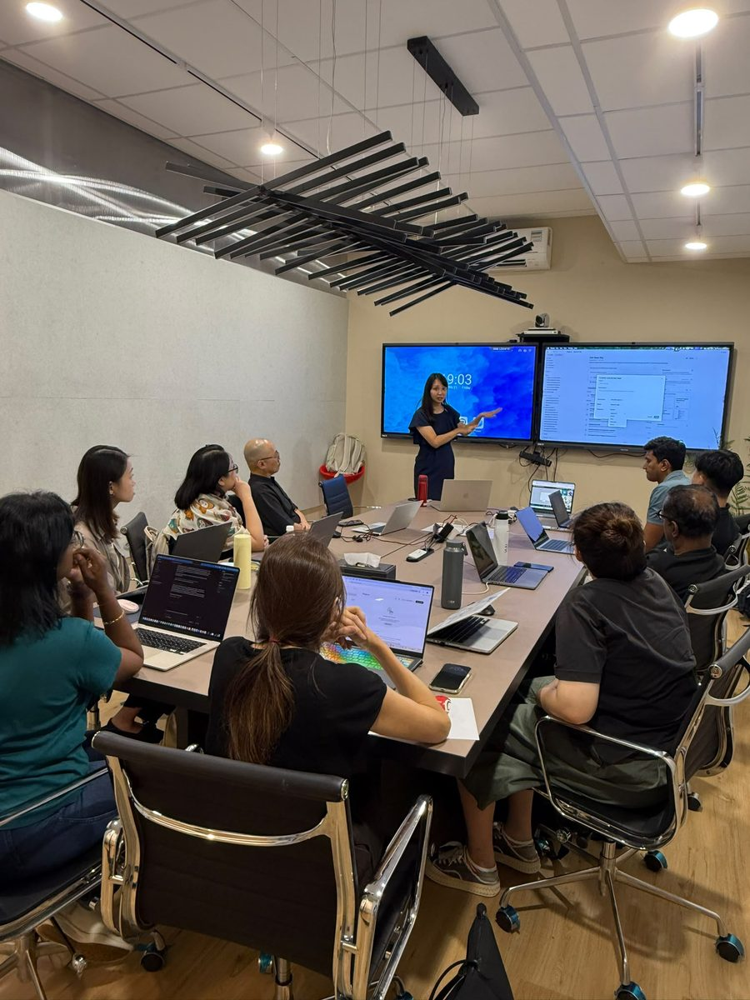
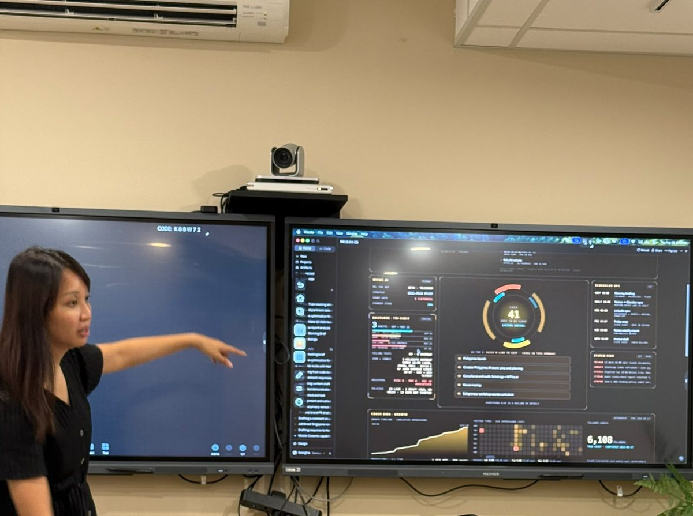
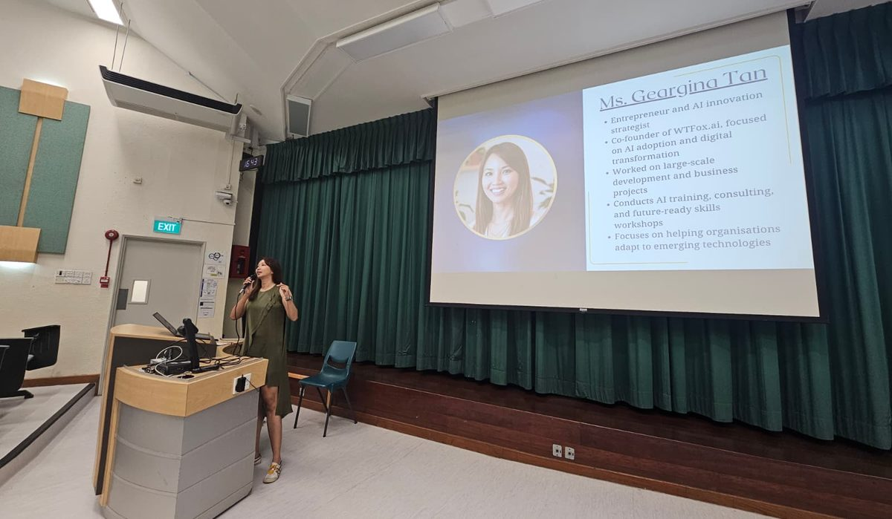

01
Chat
Ask better, get better. Which model to reach for, how to brief it like a new hire on their first day, and why a vague question earns a vague answer.
Most people live hereI run hands-on workshops that take AI from an overwhelming buzzword to something you actually use in your week. I came to this with no technical background myself, so we start where you are, in plain language, and you leave having built something that works.

I am co-founder and COO of WTFox.ai, and I run the company on Claude and ChatGPT every day. I also came to AI with no technical background, which is why my sessions start where you actually are rather than where a developer would start. Everything here follows the same path, from chatting with AI, to giving it your context, to handing it real work.

// Cohort · 3 hrs · cap 30This is the session I delivered with Cogentic AI Partners in Aug 2026, to 21 paying attendees over 2 evenings in Singapore. You build a Claude Project around your own work, connect your tools, write your first custom skill, and hand a real task over before the night ends.

// Group · 2 hrs to full day2 hr, 3 hr, and full-day formats, in person in Singapore or online. We work in Claude and ChatGPT on your team's own documents and tasks, and everyone leaves with a setup running on their own account. Recent sessions include a 3 hr workshop for 40+ senior managers at a Singapore industrial group's strategy retreat, a full-day private cohort, an Insight Hour with Podium for women professionals, and the opening talk at Keith Teo's first Claude Cowork Meetup.
 // Partner model
// Partner model
The Aug 2026 masterclass ran on a partner model. Cogentic owned the marketing, the registration, and the relationship with their community, and I built and taught the session. If you run a community, an academy, or a training business that wants practical AI in your catalogue, I am open to the same setup.
Weekly 45-minute sessions on your own role, your own tools, and your own to-do list, with async help in between. We build one playbook together and keep it in your hands at the end.
Everything I teach moves along the same 3 steps. Most people stop at the first one and assume that is all there is.
Where this happensAsk better, get better. Which model to reach for, how to brief it like a new hire on their first day, and why a vague question earns a vague answer.
Most people live hereGive it your actual work. A Claude Project holds your documents and your way of doing things, and connectors let it reach your calendar and your inbox, so it stops starting from zero every time you open it.
Where it gets usefulHand the task over. You write a skill once and it runs the same way every time, and Cowork takes a job end to end while you do something else. You delegate the outcome instead of the steps.
Where the hours come backMost AI training feels like watching a magician. Mine feels like going to the gym. Here's the stuff we drill together.
Move past "write me a blog post." Learn prompts that match how you actually think.
Pick tools that fit your role, not the ones loudest on LinkedIn.
Emails, summaries, decks, research. Buy yourself back two afternoons a week.
Taste, guardrails, and review habits so your AI work feels like you, not a robot.
I've spent the last decade at the intersection of design, product and tech. Mostly building things, sometimes breaking them, and lately teaching teams how to do both with AI in the loop.
From Universal Studios Singapore to Jewel Changi Airport to Amazon to FinTech, I've spent the better part of my career inside organisations where the stakes were high, the timelines were unforgiving, and "figure it out" was the default operating mode.
Operations, commercial strategy, transformation at scale. Different industries, same reality: execution is everything, and the people closest to the work are the ones who make or break it.
Then AI arrived and rewrote what execution looks like. I went all in, and haven't looked back since. Now I am the co-founder and COO of WTFox.ai.
If you're curious, a little skeptical, and ready to put in the reps, we'll get along.
GEARGINA
"Geargina has very good 'trainer' skills. She knows the stuff well and is able to articulate the approach very clearly with simple illustrations and drawing comparisons to things we easily understand."
"The 1:1 sessions were the best money I spent this year. I went from 'ChatGPT tourist' to genuinely faster at my job."
400% tax deductions, free premium AI tools, a PM-chaired National AI Council. Every initiative, broken down.

An API is how 2 apps talk to each other. MCP is the single plug that lets your AI connect to all of them. The USB-C comparison, and why it changes what you can ask for.